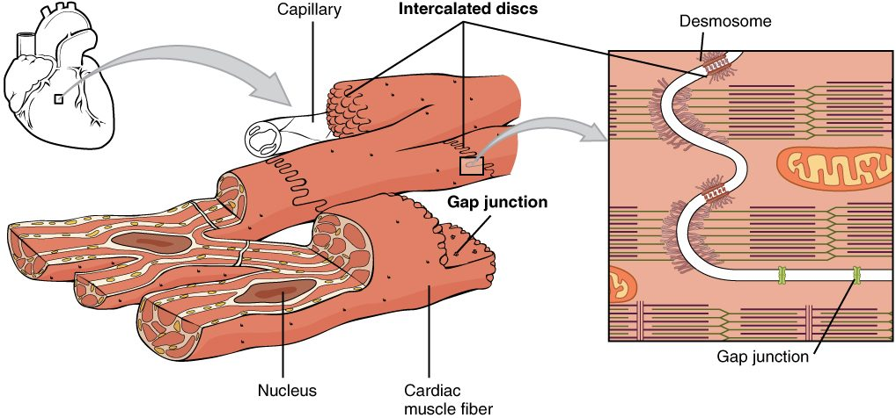

Muscle tissue types
1Why this matters
Ray, 61, had a large blockage in one of the arteries feeding his heart. By the time it was opened, part of his heart wall had gone without blood for hours. Six weeks later, a scan shows that patch is thin and doesn't move when the rest of the heart squeezes. The muscle that died there has been replaced by collagen, and it will not grow back. A mild tear in a thigh muscle, by contrast, can rebuild itself. The three muscle tissues look and behave differently, and their structure explains why.
2What this builds on
3Quick check before you start
1. Which cell junction lets ions pass directly from one cell's cytoplasm into its neighbor's?
- Desmosome
- Gap junction
- Tight junction
Show the answer
A gap junction is a cluster of channels that connect two cells, so ions and small molecules pass straight across. Desmosomes rivet cells together against pulling, and tight junctions seal the space between cells.
- Desmosome:
- Correct: Gap junction:
- Tight junction:
2. If a tube's radius is cut in half and the pressure gradient stays the same, what happens to flow through it?
- It falls to about one-sixteenth
- It falls to one-half
- It doubles
Show the answer
Resistance depends on 1 / radius to the fourth power. Halving the radius makes resistance 16 times larger, so flow falls to 1/16.
- Correct: It falls to about one-sixteenth:
- It falls to one-half:
- It doubles:
3. Which primary tissue type contracts?
- Epithelial tissue
- Nervous tissue
- Muscle tissue
Show the answer
Of the four primary tissue types, only muscle is made of cells that shorten with force. Epithelium covers and lines, and nervous tissue carries electrical signals.
- Epithelial tissue:
- Nervous tissue:
- Correct: Muscle tissue:
4Anatomy

With labels hidden, select a box to reveal its label.
5How it works, step by step
- One cardiac muscle fiber produces an electrical change across its plasma membrane.Ions carrying that change flow out of it through the gap junctions in its intercalated discs.
- Ions flow through the gap junctions into the neighboring fibers.The neighbors undergo the same electrical change, which triggers their own contraction.
- Each neighbor passes the change on through its own intercalated discs.The change sweeps across a whole region of the heart within a fraction of a second.
- The fibers of that region contract almost together and pull hard on one another.Desmosomes in the discs keep the fibers from pulling apart, and the region squeezes as one unit.
6Core concepts
7A common mistake
The wrong idea: Striated muscle is voluntary muscle; the two words mean the same thing.
What actually happens: Striation describes structure: whether actin and myosin are stacked in lined-up repeating units that show as stripes. Voluntary describes control: whether you can make the muscle contract by choice. Skeletal muscle happens to be both, but cardiac muscle is striated and involuntary. Stripes tell you how the filaments are arranged, not who is in charge.
8Check yourself
Anything you miss goes into your review queue.
1. Which muscle tissue has long, cylindrical fibers, each with many nuclei pressed against its edge?
- Smooth muscle tissue
- Cardiac muscle tissue
- Skeletal muscle tissue
- Visceral (smooth) muscle tissue
Show the answer
Each skeletal muscle fiber forms in the embryo when many small cells fuse end to end. The fused fiber is long and keeps all their nuclei, which sit just under its plasma membrane.
- Smooth muscle tissue: Smooth muscle fibers are small and spindle-shaped, with a single nucleus in the center.
- Cardiac muscle tissue: Cardiac fibers are short and branched, with one central nucleus (occasionally two).
- Correct: Skeletal muscle tissue: Correct. Long, cylindrical, multinucleated fibers with nuclei at the edge are skeletal muscle.
- Visceral (smooth) muscle tissue: Visceral muscle is another name for smooth muscle, which has one central nucleus per fiber.
2. A pathologist examines a slide of muscle. The fibers are striated and branched, each has one nucleus in its center, and dark zigzag lines cross the fibers where they meet. Which organ did the sample come from?
- The biceps in the upper arm
- The heart
- The wall of the stomach
- The wall of the urinary bladder
Show the answer
Branched, striated fibers with central nuclei and intercalated discs (the dark zigzag lines) are cardiac muscle, which is found only in the heart wall.
- The biceps in the upper arm: The biceps is skeletal muscle: unbranched fibers with many nuclei at the edge and no discs.
- Correct: The heart: Correct. Only cardiac muscle has branched striated fibers joined by intercalated discs.
- The wall of the stomach: The stomach wall is smooth muscle, which has no striations.
- The wall of the urinary bladder: The bladder wall is smooth muscle: spindle-shaped fibers with no striations and no discs.
3. A classmate says, "If a muscle is striated, it must be under voluntary control." Which tissue shows the claim is wrong?
- Skeletal muscle of the thigh
- Smooth muscle of the intestine
- Smooth muscle of a blood vessel
- Cardiac muscle of the heart
Show the answer
Cardiac muscle is striated but involuntary. Striation describes how the filaments are arranged; voluntary describes how contraction is controlled.
- Skeletal muscle of the thigh: Thigh muscle is striated and voluntary, so it fits the claim instead of disproving it.
- Smooth muscle of the intestine: Intestinal smooth muscle is involuntary, but it is also nonstriated, so it says nothing about striated muscle.
- Smooth muscle of a blood vessel: Vessel smooth muscle is nonstriated, so it cannot test a claim about striated muscle.
- Correct: Cardiac muscle of the heart: Correct. Cardiac muscle is striated yet you cannot make it contract by choice.
4. Put the steps of vasoconstriction in a small artery in order.
- Smooth muscle fibers in the vessel wall contract
- The ring of muscle around the vessel tightens
- The vessel's radius shrinks
- Resistance to blood flow rises
- Blood flow through that vessel falls
Show the answer
Contraction of the smooth muscle fibers tightens the ring around the vessel, which shrinks its radius. A smaller radius raises resistance sharply, and with the same pressure gradient, flow falls.
- Correct order: 1. Smooth muscle fibers in the vessel wall contract 2. The ring of muscle around the vessel tightens 3. The vessel's radius shrinks 4. Resistance to blood flow rises 5. Blood flow through that vessel falls
5. A strip of smooth muscle from a bladder wall is stretched in a lab dish and then released, with no stimulus. It returns to its resting length. Which property of muscle tissue is at work?
- Extensibility
- Responsiveness
- Elasticity
- Voluntary control
Show the answer
Elasticity is the ability to recoil to resting length once a stretching force is removed. The released strip springs back on its own.
- Extensibility: Extensibility is the ability to be stretched, which happened when the strip was pulled. The return afterward is recoil.
- Responsiveness: Responsiveness needs a signal, and no stimulus was given.
- Correct: Elasticity: Correct. Recoil to resting length after stretch is elasticity.
- Voluntary control: Bladder smooth muscle is involuntary, and this recoil is passive.
6. Smooth muscle contains actin and myosin, just as skeletal muscle does. Why does it show no striations?
- Its many nuclei hide the bands
- Involuntary muscle does not form stripes
- Its filaments crisscross instead of lining up
- It contains no myosin, only actin
Show the answer
Stripes appear only when actin and myosin are stacked in short repeating units lined up across the fiber. In smooth muscle, the filaments crisscross at angles, so no bands line up.
- Its many nuclei hide the bands: Smooth fibers have one nucleus each. Nuclei do not create or hide striations anyway.
- Involuntary muscle does not form stripes: Control does not create stripes. Cardiac muscle is involuntary and still striated.
- Correct: Its filaments crisscross instead of lining up: Correct. Filament arrangement, not filament type, decides whether stripes show.
- It contains no myosin, only actin: Smooth muscle has both actin and myosin; that is how it contracts.
9Summary
Muscle tissue is made of muscle fibers that contract by pulling actin filaments with myosin. All muscle shares four properties: it responds to signals, contracts, stretches (extensibility) and recoils (elasticity). Skeletal muscle has long, striated fibers with many nuclei at the edge and is voluntary. Cardiac muscle has short, branched, striated fibers with one central nucleus, joined by intercalated discs whose gap junctions and desmosomes make the heart wall contract as a unit; it is involuntary and replaces lost fibers very poorly. Smooth muscle has spindle-shaped, nonstriated fibers, lines hollow organs and vessels, and is involuntary. In vessel walls, smooth muscle narrows vessels (vasoconstriction) or lets them widen (vasodilation), which changes resistance and flow.